我在前面已经介绍了 16 世纪上半叶的意大利数学家是如何发现一般三次方程和四次方程的解法的。下一个挑战显然是一般五次方程：
我提醒一下诸位，这里要寻求什么。对于任意一个特定的五次方程，使用 10 世纪和 11 世纪阿拉伯数学家熟悉的技术就能得到一个可以达到所要求精度的数值解。我们不知道的是它的代数 解，即一个如下形式的解：
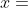
[ 用 、
、 、
、 、
、 、
、 表示的某个代数表达式 ]
表示的某个代数表达式 ]
其中括号里的“代数”的意思是“只包含加、减、乘、除运算和开方运算（开平方、开立方、开四次方、开五次方，等等）”。为了完整起见，我还是指定括号里的表达式只包含有限 次运算。像“数学基础知识：三次方程和四次方程”中给出的一般四次方程的解的表达式，正是此处要找的解的表达式。
我们现在知道，这样的解并不存在。据我所知，第一位相信这个事实，也就是相信一般五次方程没有代数解的人是一个意大利人——保罗·鲁菲尼（1765—1822）。大约在 18 世纪末，可能是 1798 年，他得到了这个结论。此后第二年，他发表了一份证明。（高斯在 1799 年的博士论文中也记录了相同的观点，但是没有给出证明。）接着，鲁菲尼分别在 1803 年、1808 年和 1813 年发表了第二个、第三个和第四个证明。这些证明没有一个能让当时的数学家同行感到满意，他们甚至没有注意到这些证明。公认的真正证明了“一般五次方程没有代数解”这个结论的人是挪威数学家尼尔斯·亨里克·阿贝尔（1802—1829），他在 1824 年发表了他的证明。
因此，在整个 18 世纪里，人们一直相信一般五次方程有代数解。寻找这个解成为那个时代最困难的问题。到了 1700 年，关于五次方程的研究没有取得丝毫进展，这距离费拉里攻克四次方程已经过去 160 年。在解决三次方程和四次方程时使用的技术都不能解决五次方程。解决这个问题显然需要一种全新的想法。
而在此之前的 17 世纪和 18 世纪初，这个问题被忽视了。随着强有力的全新字母符号体系的出现、微积分的发现、对复数的接纳以及理论科学的快速发展，数学家们有大量唾手可得的成果。在这种情况下，需要深入研究但又没有明显实际应用的难题往往失去了吸引力。这是一类典型的（请允许我在这里使用这个说法）纯数学问题。对于实际的五次方程，任何人都很容易求得它的一个数值解。
※※※
伟大的瑞士数学家欧拉在 1732 年首次研究了一般五次方程的求解问题。当时他居住在俄国圣彼得堡，在这个问题上没有得到深入的结果。但是 30 年后，他在柏林为腓特烈大帝（即腓特烈二世）工作时，他又进行了一次尝试。在论文《论任意次方程的解》中，欧拉提出任意  次方程的解的表达式也许是这样的形式
次方程的解的表达式也许是这样的形式
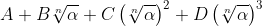
其中，  是某个
是某个
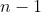
次“辅助方程”的解，而 、
、 、
、 ……是原方程系数的一些代数表达式。这非常好，但是我们又如何找到这个
次辅助方程的解呢？
……是原方程系数的一些代数表达式。这非常好，但是我们又如何找到这个
次辅助方程的解呢？
有了这位 18 世纪最伟大的数学天才 1 （高斯一般被算作 19 世纪的人），事情就不会一成不变。欧拉的研究并非徒劳，1824 年，阿贝尔给出的五次方程不可解的证明就是从类似上面给出的解的形式开始的。
1 威廉·邓纳姆在《欧拉——我们所有人的大师》（1999 年出版）中对这位伟人和他的数学研究做出了公正的评价。
※※※
有些时候，事情很出人意料，这个关键的发现居然不是 18 世纪最伟大的数学家提出来的，而是一位无名小卒提出来的。
亚历山大–泰奥菲勒·范德蒙德（1735—1796）是一个法国人（尽管从他的名字上看不太出来这一点）。1770 年 11 月，35 岁的范德蒙德在巴黎的法国科学院 2 宣读了一篇论文，随后他又在这里宣读了三篇文章（1771 年他入选成为法国科学院院士）。这四篇论文就是他的全部数学成果。他的主要兴趣似乎是音乐，《科学传记大辞典》中称：“据说，当时的音乐家们认为范德蒙德是一名数学家，而数学家们又认为他是一名音乐家。”
2 更准确地说，法国科学院于 1666 年由让–巴蒂斯特·科尔贝在巴黎创建，是 17 世纪后期欧洲科学伟大复兴的产物，可与 1660 年创建的英国皇家学会相媲美。法国科学院过去常在卢浮宫举办集会。
范德蒙德因以他的名字命名的范德蒙德行列式而广为人知（我将在后面介绍它）；然而，接下来要讨论的判别式实际上并没有真正出现在他的论文中，把这归功于他似乎是一个误会。总之，范德蒙德是一个古怪而神秘的人，就像弗拉基米尔·纳博科夫作品中的人物。后来，他成为一名雅各宾党人，是狂热的法国革命支持者，直到 1796 年因病去世。
范德蒙德的重要见解是用包含所有
解的表达式表示方程的每个
解。例如，考虑二次方程  - 0。假设它的解是
和
- 0。假设它的解是
和  ，下面两个式子显然成立：
，下面两个式子显然成立：
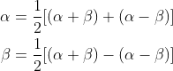
稍微换个说法，考虑到根号说明有两个可能值，一正一负，下面的表达式的两个可能值就是这个二次方程的解：
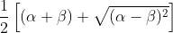
这有什么意义呢？
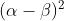
等于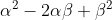
，也等于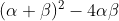
，这是关于
和
的对称多项式
。回想一下，用根表示的对称多项式总可以转化为用系数表示的多项式，在该情况中就是  。
。
我们由此就可以得到熟悉的一般二次方程的解法。当然，这不是重点。重点在于这种方法似乎可以推广到任意次方程上，而前面解二次方程、三次方程和四次方程的方法都是专门的方法，不能推广。
让我们把这种方法推广到三次方程  上。如通常一样，用
上。如通常一样，用  和
和  表示 1 的两个复立方根，回想介绍单位根时所讲的内容，它们满足二次方程
表示 1 的两个复立方根，回想介绍单位根时所讲的内容，它们满足二次方程
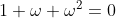
，由此得到一般解：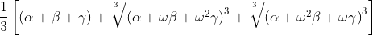
因为
是一个缺项三次方程，
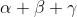
等于 0（见第 5 章），所以我们只需考虑两个立方根项。但这里似乎有一个缺点：与处理二次方程的情况不同，二次方程的解的根号表达式里的
和
是对称的，而上式立方根号下的表达式里的
、
、 是不对称的。
是不对称的。
继续深入研究一下，设
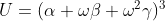
，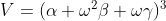
。在所有可能的
、
、
的 6 种置换下， 和
和 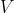
会如何变化呢？我希望用一种更清晰的方式来表示这些置换：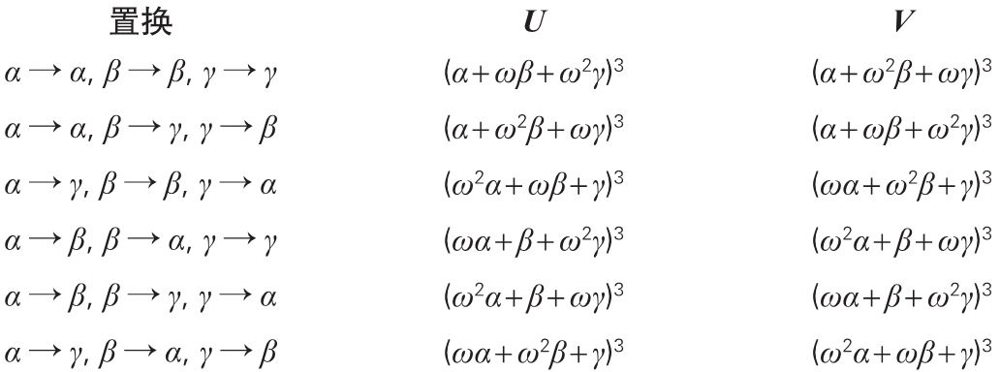
（第一个置换没有发生任何变化，叫作“恒等置换”。）
这张表格看起来没有给出更多有用的信息。然而，由于
是 1 的立方根，我们可以利用这个事实把
项前面的
和
“提出来”。例如，第五行的第一项：
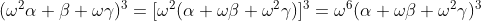
结果正好是
。事实上，每一个置换的结果要么是
，要么是
，正好有一半变成
，一半变成
。解的任意一种可能置换要么令
和
保持不变，要么将
与
对换。
为了让读者的印象更深刻，我再用略微不同的方式重述一次。我尝试了所有可能的解的置换，发现其中一半置换保持
和
不变，而另一半置换把
变成
，同时把
变成
。
这里最关键的概念是对称
。用解
、
和
表示的多项式可能是完全对称的，就像韦达和牛顿曾经研究过的：用所有 6 种可能的方式置换解，多项式的值不变，只会取同一个值。或者，一个多项式也可能是完全不对称的：用所有 6 种可能的方式置换解，多项式会取 6 个不同的值。或者，如上面的例子所示，多项式可能是部分
对称的：用所有 6 种可能的方式置换解，多项式的不同取值的个数大于 1 但小于 6。
现在，从所有这些事实可知，解
、
和
的任意可能置换都将保持
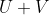
和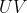
（或者
和
的任意其他对称多项式）不变。所以，
和
本身一定是解
、
和
的对称多项式，因此它们可以用这个三次方程的系数
和
表示。事实上，如果仔细观察这个代数式（还要记住，在一个缺项三次方程中， 的系数为
的系数为 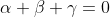
），你会得到：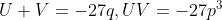
所以，如果求解下面这个关于未知量
的二次方程：
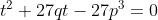
你就会得到
和
。于是，这个三次方程就可以求解了。（你可以将这个解法与“数学基础知识：三次方程和四次方程”中的解法对比。）
这种方法还有一个缺点。与以前一样，通解表达式中的根号意味着包括了所有可能的根。对于我们讨论的三次方程来说，就是这个立方根的所有 3 种可能：一个数、
乘以这个数、
乘以这个数。因为方括号里出现了两个立方根，所以这个表达式总共表示 9 个数：三次方程的 3 个解和其他 6 个不是解的数。如何知道哪个数是解，哪个数不是解呢？
范德蒙德实际上没有完全解决这个问题。不过，他提出了一个非常重要的见解。对于三次方程来说：
把通解写成所有 解的对称多项式或部分对称多项式的形式。
问：在
答案是两个，我们称它们为
以上就是通过观察解的置换及保持某个表达式不变的那些置换组成的子集 来求解方程的第一次尝试。在上述例子中，
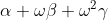
就是这样的一个表达式。以上内容就是攻克一般五次方程问题的关键想法。※※※
可怜的范德蒙德，他的成就与另一位更伟大的天才相比就完全暗淡无光了。爱德华兹教授说：“范德蒙德是法国人，但他的名字不像法国人；而拉格朗日的名字像法国人，但他不是法国人。”3
3 见《伽罗瓦理论》第 19 页。
1736 年，朱塞佩·洛多维科·拉格朗日（1736—1813）出生于意大利西北部的都灵，距法国边境只有 30 英里。虽然他不是法国人，但是他有一部分法国血统，而且似乎更喜欢用法语写作，他很早就开始使用法语姓氏“Lagrange”（不过他讲法语时带有很重的意大利口音）。1787 年，拉格朗日成为法国科学院院士，此后一直生活在巴黎，于 1813 年逝世。他经历了法国大革命，并为制定度量衡标准做了大量重要工作，因此他以法语名字约瑟夫–路易·拉格朗日闻名于世不无道理。巴黎的一个小公园就是以他的名字命名的，那里有这座城市最古老的一棵树。4
4 拉格朗日是一位伟人，按照查尔斯·默里的评分，他的得分是 30 分（见《文明的解析：人类的艺术与科学成就》）。欧拉是这个领域的带头人，得分是 100 分。牛顿是 89 分，欧几里得是 83 分，高斯是 81 分，柯西是 34 分。可怜的范德蒙德的得分是 1 分，这个分数可能是根据“他的”行列式得出的。
拉格朗日的职业生涯早期是在都灵度过的，他 16 岁就成为那里的数学教授。当 1770 年范德蒙德向法国科学院递交他的论文时，拉格朗日已经搬到了德国柏林，来到腓特烈大帝的宫廷。事实上，他是欧拉的继任者，在欧拉离开后的 1766 年进入宫廷。腓特烈大帝发现了拉格朗日，因为拉格朗日对当时的政治和哲学非常了解，而且头脑灵活、机智，比朴实的欧拉更平易近人 ，所以腓特烈大帝对他能接替欧拉在自己身边工作非常高兴。
1771 年，在范德蒙德向巴黎的科学院递交论文的几个月之后，拉格朗日对代数学做出了伟大贡献。拉格朗日的结果是在腓特烈大帝掌管的柏林科学院发表的，论文题目是《对方程的代数解的思考》。正是这篇由已经声名显赫的数学家发表的文章，把通过方程解的置换来求解方程的想法呈现给广大数学家。
这的确非常不公平，范德蒙德首先想到了这一点，而且这个想法已经得到了现代教材的认可。然而，他的论文在当时没有得到关注，根据巴什马科娃和斯米尔诺娃的著作《代数学的起源与演变》所述，他的论文“对代数学的发展没有产生影响”。范德蒙德的这篇论文直到 1774 年才发表，那时拉格朗日的论文已经广为人知。没有证据表明拉格朗日知道范德蒙德的工作。总之，拉格朗日是一个诚实的人，如果他知道范德蒙德的工作的话，他会承认这一点。这是两个数学天才所见略同的典范，更准确地说，这是一个伟大的数学天才与一个优秀的数学天才所见略同的典范。
拉格朗日与范德蒙德遵循着相同的思路，但是拉格朗日的数学功底更深厚，对问题的分析更透彻。我还是以一般的缺项三次方程
为例进行说明。
拉格朗日一开始使用与范德蒙德相同的表达式
（术语为拉格朗日预解式
），但他注意到：当置换解
、
和
时，上面的表达式取六个不同的值，尽管它的立方只取两个值（前文已说明），这些值是
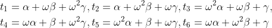
同前文一样，因为
是 1 的立方根，我们可以把它从式中提出来，于是
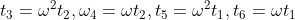
。现在构造一个六次多项式方程，使得这些
是它的解。这个多项式方程是
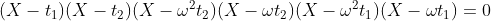
拉格朗日称之为预解方程 。很容易把它化成
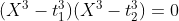
这就是我们前面得到的二次方程，它的解是
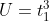
和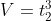
。拉格朗日对一般四次方程进行了同样的处理，这次他得到了一个 24 次预解方程。与三次方程的六次预解方程“降次”成一个二次方程一样，这个四次方程的 24 次预解方程降次成一个六次方程。这似乎不太好解，但是这个关于  的六次方程实际上是一个关于
的六次方程实际上是一个关于
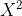
的三次方程，所以它还是可解的。五个对象的所有可能置换共有 1×2×3×4×5 = 120 个。因此，五次方程的拉格朗日预解方程是 120 次方程。拉格朗日通过一些技巧可以把这个预解方程降次成一个 24 次方程。然而就在这里，拉格朗日陷入了困境。但是，同范德蒙德一样，他也抓住了重点：为了知晓方程的可解性，必须研究它们的解的置换，以及在这些置换的作用下特定的关键表达式——预解方程——发生了怎样的变化。
他还证明了一个重要的定理，这个定理就是我们今天教给学习代数的学生的拉格朗日定理。我用拉格朗日自己对此的理解方式来陈述这个定理。这个定理的现代表述形式与之大相径庭，而且更一般化。
假设有一个多项式包含
个未知量 5
，那么就有
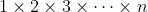
种置换这些未知量的方法。你也许知道这个数被称为“
的阶乘”，写成 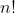
。所以，2! = 2，3! = 6，4! = 24，5! = 120，以此类推。（习惯上，1! = 1，出于更全面而深刻的考虑，0! 也取 1。）假设同前文处理
、
和
一样，用
种方式置换这
个未知量，那么这个多项式有多少个不同的取值？在前文中，答案是 2，分别为
和
。但是一般
来说，这个答案是多少呢？如果某个多项式取
个不同的值，那么我们能确定
的某些特征吗？
5 这里用“多项式”是为了简单起见，实际上是有误的，我应该称之为“有理函数”。在后面介绍域论时，我再解释其中的原因。这里用“多项式”暂时没有问题。
拉格朗日定理说，
总是一个可以整除
的数。使用
、
和
构造任意的多项式，用所有 6 种可能方式置换 3 个未知量，并计算多项式有多少个不同的取值。如果多项式是对称的，那么不同取值的个数是 1；如果多项式是上面给出的例子，那么不同取值的个数是 2；如果多项式是
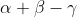
，那么不同取值的个数是 3；如果多项式是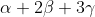
，那么不同取值的个数是 6。但是，不同取值的个数不可能是 4 或 5，这就是拉格朗日证明的事情。当然，他对任意数
进行了证明，而不只是 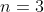
的情形。（拉格朗日定理给出了
的一个性质：它可以整除
，但是这不能保证每一个整除
的数一定是一个可能的
，其中
是某个多项式在
个置换下的不同取值的个数。例如，假设
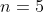
，那么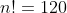
，由于 4 可以整除 120，因此你也许认为存在某个五元多项式，在经过所有 120 种可能的置换之后，这个多项式取 4 个值。但事实并非如此，这一点是柯西发现的，它对寻找一般五次方程的代数解这个问题至关重要，我将在第 8 章详细介绍柯西。）拉格朗日定理是现代群论的基石之一，群论在拉格朗日生活的时代还不存在。
※※※
本章出现的第一个名字是保罗·鲁菲尼，他多次试图证明一般五次方程没有代数解。鲁菲尼遵循拉格朗日的想法。对于一般三次方程，我们可以得到它的一个可求解的二次预解方程。对于四次方程，我们可以得到一个三次预解方程，还知道如何求解这个三次预解方程。拉格朗日已经证明：为了得到一般五次方程的代数解，我们需要找到一个三次或四次预解方程。鲁菲尼仔细观察了置换未知量时多项式的可能取值，然后证明了对于一般五次方程，我们不可能得到一个三次或四次预解方程。
为鲁菲尼写传记的一位作家 6 说：“我们应该对鲁菲尼深表同情。”的确应该如此，他的第一个证明存在缺陷，但是他继续研究，至少发表了 3 个证明。他把这些证明寄给他那个时代的资深数学家，其中就包括拉格朗日，但是这些证明不是被忽视，就是被用傲慢的态度说不了解而拒绝接受，来自拉格朗日的回复一定令他感到尤为痛苦，因为他认为拉格朗日是他的意大利同胞。鲁菲尼还把他的证明提交给各个学术团体，比如法兰西学院（替代因法国大革命而被暂时废弃的法国科学院）和英国皇家学会，但结局都一样。
6 奥康纳和罗伯逊在苏格兰圣安德鲁斯大学的数学网站上发表了关于鲁菲尼的文章。
几乎直到 1822 年他去世前，可怜的鲁菲尼一直试图让大家认可他的证明，但都没有成功。只有在 1821 年，他确实得到了一份实实在在的认可。那一年，伟大的法国数学家奥古斯丁–路易·柯西（1789—1857）给他寄来一封信，鲁菲尼在他生命的最后几个月里一定很珍惜这封信。柯西在信中赞扬了鲁菲尼的工作，并声明以柯西自己的观点来看，鲁菲尼已经证明了一般五次方程没有代数解。事实上，柯西在 1815 年发表了一篇论文，很明显就是以鲁菲尼的论文为基础的 7 。
7 鲁菲尼是一位执业医师，也是一位数学家。因此请允许我介绍一下另外一位同样有双重职业的 18 世纪代数学家，这个人就是爱德华·华林（1736—1798）。1760 年，华林继艾萨克·牛顿之后成为剑桥大学卢卡斯数学教授。七年后，就在他还在担任该职位时，他获得了医学博士学位，不过他似乎没怎么行过医。他在 1762 年的著作《分析杂说》中论述了方程解的对称函数与这个方程的系数之间的关系，我已经在介绍牛顿的笔记时讨论过有关的话题（令人困惑的是，华林的这部著作的第二版标题是《代数沉思录》）。请原谅我再多说几句，我还要介绍一下瑞典数学家埃兰·布林（1736—1798）的成就。他在 1786 年发现任意一个五次方程都可以化成一个不含未知量的二次幂、三次幂和四次幂的方程，换句话说，可以化成一个形如
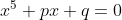
的方程。我喜欢称这个方程为“严重缺项五次方程”。既然柯西的名字再次出现在这个故事里，我就停下来多说几句关于柯西的事情。在数学史上，他是一个名人。“以柯西的名字命名的概念和定理比任何其他数学家都多（仅仅在弹性力学领域，就有 16 个概念和定理是以柯西命名的）。”这段话摘自《科学传记大辞典》中弗赖登塔尔（1905—1990）为柯西所写的词条，该词条长达 17 页，与高斯的词条一样长。
然而，柯西的研究风格与高斯大不相同。高斯发表文章非常谨慎，只发表那些他已经弄清楚且非常完美的结果（这就是为什么他发表的文章几乎不可读的原因）。150 年来，数学家们一直在开这样一个玩笑：当某人得出一个绝妙并且近乎原创的结果时，他的首要任务是要核实一下这个结果是否在高斯的某篇未发表的论文中出现过。相比之下，柯西则是把脑海中闪现的一切想法都发表出来，而且是在几天之内就发表。实际上，他为此还创办了一份私人杂志。
柯西的个性也引发了很多评论。不同的传记作家对他的描述也不同，有人把他描绘成一个虔诚、正直和仁慈的典范，也有人把他描绘成一个追求权力和威望的冷血阴谋家，还有人把他描绘成一个低能的专才，精神上状态混乱、生活上冒失莽撞。柯西是一位虔诚的天主教徒，也是一位坚定的保皇党人，当欧洲的知识分子阶层开始以极大的热情投入世俗的进步政治时，他却对此极力反对。8
8 柯西似乎非常相信中世纪的君权神授说。君权神授说经常被误认为是新教的教义，但实际上这可以追溯到中世纪，它在 17 世纪的法国很流行。如果这是真的，那么柯西一定是坚信这个理论的最后一个声名显赫的知识分子。
在许多曾经被认为对柯西不利的问题上，现代评论倾向于认为柯西是无辜的（见第 8 章）。甚至贝尔（1883—1960）也公平地对待柯西：“他的性情很温和，除了数学和宗教之外，他在其他任何事上都表现得很温和。”弗赖登塔尔倾向于认为他是一个低能专才：“他的堂吉诃德式的举止让人很难以置信，人们容易觉得他太过夸张……柯西看起来像孩子般天真。”无论这个人的个性如何，他都是一位非常伟大的数学家，这一点毋庸置疑。
※※※
在这种情况下，我们也许会同情可怜的鲁菲尼，蔑视阿贝尔，对他获得证明一般五次方程没有代数解的荣誉有些不屑。
事实上，没有人会这么想。首先，尽管柯西认为鲁菲尼证明了这个结论，但是他那个时代的数学家们都认为他的证明有缺陷。（现代观点对鲁菲尼更友善，一般五次方程没有代数解这个结论有时也被称为阿贝尔–鲁菲尼定理。）其次，鲁菲尼书写证明的风格令人难以理解，这正是拉格朗日否认他的原因。最后，尽管阿贝尔看起来是一个乐观开朗、善于交际的人，但他的人生境遇比鲁菲尼更可怜。
阿贝尔是 19 世纪挪威三大代数学家中的第一位。后面我将介绍另外两位数学家。阿贝尔出生在欧洲北部海风肆虐的边缘地带，靠近挪威斯塔万格，位于挪威版图的“鼻子”上。当年，这个地方本身就很贫穷，时局不稳让这里更加贫穷、不幸。阿贝尔出身于一个有教养的贫穷家庭，他的父亲和祖父都是当地的牧师。阿贝尔的父亲在政治上遭遇不幸，开始酗酒，最后“因酗酒而亡，留下九个孩子和一个寡妇。阿贝尔的母亲也为了寻求安慰而酗酒”。9
9 这段摘自彼得·佩希奇的《阿贝尔的证明》（2003 年出版）。但贝尔说阿贝尔的父亲有七个子女。另外，贝尔在《数学大师》中关于阿贝尔的章节是 20 世纪 30 年代的美国风格，绝对值得一读。这部著作是贝尔最好的作品，不过根据你对作家行文的夸张程度的容忍度，也可能说它是他最差的作品。
阿贝尔死于他 27 岁生日的几周之前。在他短暂的余生中，过得最好的日子也捉襟见肘，最差的日子更是债台高筑。他的祖国的情况也与他的人生类似。在阿贝尔十几岁的时候，挪威是一个半独立国家，是瑞典和挪威联合王国的一部分，首都是奥斯陆，当时叫克里斯蒂安尼亚（Christiania）10 ，有自己的议会，但挪威处于相对富裕、人口更多的瑞典的经济和军事的阴影之下。在这种情况下，挪威政府仍然在 1825 年到 1827 年筹集足够的资金送这位不知名的年轻数学家去德国和法国，这件事非常值得赞扬，不过赞助资金比较匮乏，而且支出还受到监督，这些引起了为阿贝尔写传记的作者的不满，甚至后来的挪威政府也为此感到内疚。
10 后来，“Christiania”变成了一个更地道的挪威拼法：“Kristiania”。
阿贝尔很早就接触到了数学，非常幸运地得到了老师伯恩特·霍尔姆伯（1795—1850）的指导，霍尔姆伯非常欣赏他的才华。尽管霍尔姆伯自己不是富有创造力的数学家，但是他熟悉当时数学界的主流文献。在霍尔姆伯的鼓励和经济帮助下，阿贝尔于 1821 年到 1822 年在新成立的克里斯蒂安尼亚大学求学。
从 1820 年开始，阿贝尔就着手研究一般五次方程，并且已经证明了不可解定理。1824 年，他自己出钱印刷发表了这个证明。为了节省开支，他把这个证明压缩到只有 6 页纸，因此牺牲了证明过程中的连贯性。尽管如此，他坚信这 6 页纸能为他敲开欧洲最伟大的那些数学家的大门。
当然，事情并不像他想象的那样。阿贝尔在准备拜访高斯之前，给高斯送上了一份自己的证明，但是伟大的高斯看都没看就把证明扔到一边。这件事倒没有听起来那么差劲，因为高斯当时已经很有声望了，就像今天一样，著名的数学家经常遭受一些声称自己证明了某某著名问题的怪人的骚扰。11 在其声望鼎盛时期，高斯是一个不能容忍被愚弄的人，而且他似乎对寻找多项式方程代数解的问题没什么兴趣。所以阿贝尔放弃了拜访高斯的计划。
11 不是数学家的人也会受到骚扰。在我写的关于黎曼假设的书出版之后，我不断收到信件和电子邮件，都是那些声称自己已经解决了这个深奥的难题的人寄来的。我既不想审阅他们的文章，又不愿意伤害他们，所以就准备了回复的套话：“我不是一位职业数学家，只是一个拥有数学学位的作家。事实上，我写了一本关于黎曼假设的书并不能说明我有资格评判这个领域的工作。我还曾经写过一本关于歌剧的书，但是我不会唱歌。我建议你联系当地大学的数学系。”
阿贝尔在柏林交了好运，这弥补了他的失望。他遇见了奥古斯特·克雷尔（1780—1855），一位数学史上独一无二的人物。克雷尔不是一位数学家，而是一位数学经纪人。他善于发现数学天才和优秀英才，当他发现人才时，他会尽其所能去培养他们。克雷尔出身卑微，全靠自力更生，基本上自学成才。他在普鲁士政府里找到一份土木工程师的工作，而且升到了这个职位的最高级别。1838 年，他在一定程度上负责了从柏林到波茨坦的德国第一条铁路的施工。克雷尔善于交际、慷慨大方、精力充沛，他充当了伟大数学天才的“助产师”，间接对 19 世纪的数学做出了巨大的贡献。
就在 1825 年阿贝尔来到柏林时，克雷尔下定决心要创办自己的数学期刊。克雷尔发现了这位年轻的挪威数学天才（显然，他们用法语交流），把他介绍给柏林的每一个人，在他刚创办的《纯粹数学与应用数学杂志》第一期发表了阿贝尔的不可解定理的证明。他还发表了阿贝尔的更多论文。五次方程不可解的证明仅仅是阿贝尔的广泛的数学兴趣中的一个方面，他主要研究的是分析学中的函数论。
1827 年春天，身无分文的阿贝尔回到了克里斯蒂安尼亚，从此再也没有离开挪威。1829 年，他因肺结核去世，肺结核是那个时代的不治之症。阿贝尔去世两天后，克雷尔写信告诉他，德国柏林大学已聘请他为教授，当然那时克雷尔还不知道阿贝尔已经离世了。
阿贝尔的证明结合了他从欧拉、拉格朗日、鲁菲尼和柯西等人那里学到的想法，并用其独创的方法和见解将这些想法结合在一起。他用的是反证法 ：从假设欲证的结论不成立开始，然后论证这将导致逻辑矛盾。
阿贝尔想要证明的是一般五次方程没有代数解，因此，他首先假设存在一个代数解。他将一般五次方程写成
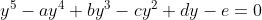
他接下来说，现在假设存在一个代数解，所有这样的解  都可以用
都可以用  、
、 、
、 、
、 和
和  的表达式来表示，而这些表达式只包含有限次加、减、乘、除和开方运算。当然，这些开方可以“嵌套”，就像在一般三次方程的解中，立方根之下还有平方根一样。所以，我们用某个一般而有效的方式表示这些解，其中可以出现开方的嵌套，即开方里可以出现开方。
的表达式来表示，而这些表达式只包含有限次加、减、乘、除和开方运算。当然，这些开方可以“嵌套”，就像在一般三次方程的解中，立方根之下还有平方根一样。所以，我们用某个一般而有效的方式表示这些解，其中可以出现开方的嵌套，即开方里可以出现开方。
阿贝尔给出通解的一个表达式，这个表达式与第 7 章中欧拉给出的表达式非常相似。借用拉格朗日的做法（和范德蒙德的做法，不过阿贝尔不知道范德蒙德的做法），他断言这个通解一定能表示为所有 解和五次单位根的多项式。然后，阿贝尔利用我在第 7 章中介绍的柯西的结果：对一个包含 5 个未知量的多项式，当你置换这些未知量时，它有 2 个不同的取值，或者 5 个不同的取值，但不会出现 3 个或者 4 个不同的取值。把这个结果应用到他的通解表达式中，阿贝尔得到了矛盾。12
12 详细的证明超出了本书的深度。我建议好奇的读者阅读彼得·佩希奇的《阿贝尔的证明》。该书尽可能地使用初等的方法给出了证明，从三个不同的层次进行了介绍：概述（比这里的介绍详细）、阿贝尔 1824 年的论文原文，以及对此论文中没有写出的逻辑步骤的解释。范德瓦尔登的《代数学的历史》从更高的层次用两页半的篇幅给出了一个简明扼要的总结。
※※※
阿贝尔的关于一般五次方程没有代数解的证明（更严格地说，是阿贝尔–鲁菲尼的证明）结束了代数学历史上第一个伟大的时代。
在结束对这个时代的介绍前，我将对这件事发表一些事后看法。在 1826 年，人们对阿贝尔的结果置若罔闻。事实上，阿贝尔的证明经历了很长时间才广为人知。1835 年，在这篇论文发表 9 年后，在都柏林举行的英国科学促进会的会议上，数学家杰拉德（1804—1863）递交了一篇论文，在这篇论文中，他声称自己找到了一般五次方程的代数解。20 年后，杰拉德仍然坚持自己的说法。
阿贝尔的证明也没有终结一元多项式方程的一般理论。尽管一般 五次方程没有代数解，但我们知道特殊 的五次方程有根式解。例如，在前面介绍单位根时，我给出了方程
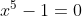
的解，它毫无疑问是五次方程。所以这样的问题就出现了：哪些 五次方程可以代数求解，即解可以仅仅用方程系数的多项式和“+”“-”“×”“÷”及根号来表示？给出这个问题完整解答的人是另一位法国数学天才埃瓦里斯特·伽罗瓦（1811—1832），我将在第 11 章介绍他的故事。但是，在 19 世纪的前几十年里，人们对代数学的认识发生了巨大而缓慢的转变。在阿贝尔印刷发表他的 6 页证明很久之前，这样的转变就已经开始了。我把这种新的思维方式定义为“新数学对象的发现”。整个 18 世纪到 19 世纪初期，代数还仅仅被认为是牛顿著作的标题所称的“普遍算术”，是利用符号对数进行运算的算术。
在那些年里，欧洲数学家们一直在吸收 17 世纪的大师们留给他们的美妙的新字母符号体系。渐渐地，符号对数的世界的依恋越来越弱了，符号可以自由漂泊，开始了自己的生活。就像两个数加起来得到一个新数那样，难道就没有别的事物可以合在一起，使得两个这样的事物结合在一起得到另一个相同类型的事物吗？当然有。高斯在 1801 年的经典著作《算术研究》中就讨论了二次型 ，即包含两个未知量的多项式，如下所示：
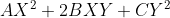
高斯在研究中产生了合成 二次型的想法，即把两个二次型融合起来得到一个新的二次型，这比对表达式进行简单的加法和乘法要精妙得多。按高斯的说法，这是一个还没有人考虑过的课题。
接下来是 1815 年柯西关于置换多项式的未知量时多项式的取值个数的论文。这就是阿贝尔在其证明中引用的论文。在这篇论文中，柯西引入了合成置换 的想法。
举一个简单的例子：假设有 3 个未知量
、
和
，并且假设置换
将
和
对换、置换  将
和
对换。现在，如果我首先进行置换
，再进行置换
，会发生什么事情？置换
把
将
和
对换。现在，如果我首先进行置换
，再进行置换
，会发生什么事情？置换
把
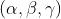
变成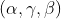
，然后置换
把
变成 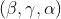
。所以合起来的效果是把 变成 ，得到另一个置换。我们可以称之为置换 ，置换
和置换
合成得到置换
。事实上，这正是柯西描述的运算方式，因此柯西本质上发明了群论（不过他没有使用“群”这个术语）。
，置换
和置换
合成得到置换
。事实上，这正是柯西描述的运算方式，因此柯西本质上发明了群论（不过他没有使用“群”这个术语）。
这样一来，柯西就进入了一个奇妙的新世界。请注意，置换合成与数字相加的相似性是如何在某个重要的方面被打破的。如果先进行置换
，然后再进行置换
，结果就是
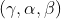
。所以，合成的顺序是很重要的。但数字相加不会出现这样的情况，7+5 等于 5+7。数的这个特性的专有术语是交换性 。柯西的置换合成是非交换的。在 19 世纪早期，所有这一切才刚开始流传。经过几代人对韦达和笛卡儿的字母符号体系的研究，数学家们开始认识到把两个数相加或相乘得到一个新数的合成只是一类运算的一种特殊情况，而这类运算还有更广泛的应用，可以运用到根本不是数的对象上。他们习以为常的那些符号可以代表任何事物 ：数、置换、数组、集合、旋转、变换、命题，等等。当人们意识到这一点时，近世代数诞生了。
※※※
在接下来的几章里，我将不再严格按照年代顺序展开叙述。现在我们已经来到一个新代数思想繁荣发展的时期，也就是 19 世纪中间的五十年。在这段时期，人们不仅发现了群，还发现了其他新的数学对象。“代数”已经不再是一个单数名词，而变成了一个复数名词。“域”“环”“向量空间”“矩阵”等现代概念开始形成。乔治·布尔（1815—1864）将逻辑置于代数字母符号体系中，而几何学家们发现，多亏了代数学，他们能够去探索超过三维的空间。
研究这段快速发展时期的历史学家有两种选择：或者严格按照年代顺序，试图揭示新思想是如何产生的，同时展示新思想之间逐年来的相互作用；或者沿着这段时期中的一条线索展开，然后再回过头来选择其他线索。我将采用第二种叙述方式，把代数学的飞速发展和代数思维的根本变革分成几条路线。首先，让我们进入第四维。